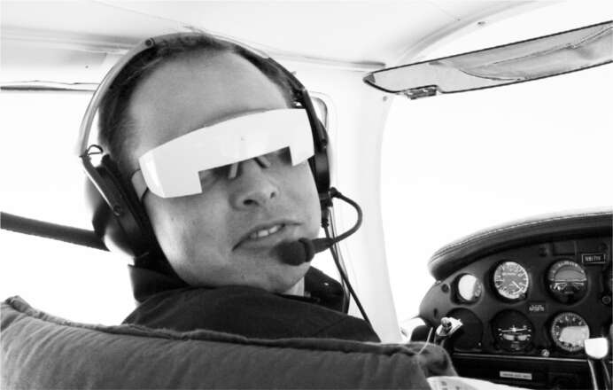
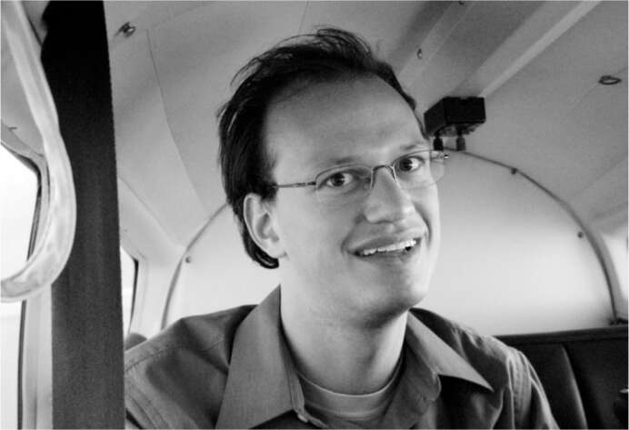

Bay
Sau khi rời PayPal, Musk mua một chiếc máy bay cánh quạt phản lực cánh đơn và quyết định học lái, giống như cha và ông bà anh đã từng làm. Để lấy được bằng lái, anh cần năm mươi giờ đào tạo, và anh đã hoàn thành tất cả chỉ trong hai tuần. "Tôi có xu hướng làm mọi việc rất mãnh liệt", anh nói. Anh dễ dàng vượt qua bài kiểm tra Quy tắc bay bằng mắt thường, nhưng lại trượt bài kiểm tra Quy tắc bay bằng thiết bị lần đầu tiên. "Bạn phải đội mũ trùm đầu, nên không thể nhìn ra ngoài, và một nửa thiết bị bị che khuất", anh chia sẻ. "Sau đó, họ tắt một động cơ, và bạn phải hạ cánh. Tôi đã hạ cánh được, nhưng người hướng dẫn nói, 'Chưa đủ tốt. Trượt.' " Ở lần thử thứ hai, anh đã đậu.
Điều này đã thôi thúc anh thực hiện một bước đi táo bạo: mua một chiếc máy bay phản lực quân sự của khối Xô Viết được chế tạo tại Tiệp Khắc có tên Aero L-39 Albatros. "Đây là loại máy bay họ dùng để huấn luyện phi công chiến đấu, vì vậy nó có khả năng nhào lộn trên không đáng kinh ngạc", anh nói. "Nhưng nó cũng khá mạo hiểm, ngay cả đối với tôi." Có lần, anh và huấn luyện viên đã bay ở độ cao thấp trên Nevada. "Cũng giống như trong phim Top Gun. Bạn chỉ cách mặt đất vài trăm feet, bay theo đường viền của những ngọn núi. Chúng tôi đã bay thẳng đứng lên sườn núi rồi lộn ngược."
Việc bay lượn đã khơi dậy tính phiêu lưu trong anh. Nó cũng giúp anh hình dung rõ hơn về khí động lực học. "Nó không chỉ đơn giản là nguyên lý Bernoulli", anh nói khi bắt đầu giải thích về cách đôi cánh nâng một chiếc máy bay đang di chuyển. Sau khoảng năm trăm giờ bay trên chiếc L-39 và các loại máy bay khác, anh bắt đầu cảm thấy hơi nhàm chán. Nhưng sức hút của bầu trời vẫn còn đó.
Vào dịp cuối tuần lễ Lao động năm 2001, ngay sau khi khỏi bệnh sốt rét, Musk đến thăm người bạn cùng tiệc tùng từ thời đại học Penn, Adeo Ressi, tại Hamptons. Sau đó, trên đường lái xe trở về Manhattan trên đường cao tốc Long Island, họ đã nói về những dự định tiếp theo của Musk. "Tôi luôn muốn làm điều gì đó trong lĩnh vực không gian", anh nói với Ressi, "nhưng tôi không nghĩ có việc gì mà một cá nhân có thể làm được." Tất nhiên, việc chế tạo tên lửa quá tốn kém đối với một người bình thường.
Hay là không? Yêu cầu vật lý cơ bản chính xác là gì? Musk nghĩ, tất cả những gì cần thiết chỉ là kim loại và nhiên liệu. Những thứ đó không thực sự đắt đỏ. "Khi chúng tôi đến Đường hầm Midtown", Ressi kể, "chúng tôi đã quyết định rằng điều đó là khả thi."
Khi về đến khách sạn tối hôm đó, Musk đăng nhập vào trang web của NASA để đọc về kế hoạch lên sao Hỏa của họ. "Tôi nghĩ nó phải sớm thôi, vì chúng ta đã lên mặt trăng vào năm 1969, vậy nên chúng ta chắc sắp lên sao Hỏa rồi." Khi không tìm thấy lịch trình, anh tiếp tục tìm kiếm kỹ hơn trên trang web, cho đến khi nhận ra rằng NASA không có kế hoạch nào cho sao Hỏa. Anh đã rất sốc.
Trong lúc tìm kiếm thêm thông tin trên Google, anh tình cờ thấy thông báo về một bữa tối ở Thung lũng Silicon do một tổ chức có tên là Mars Society tổ chức. Nghe có vẻ thú vị, anh nói với Justine, và mua hai vé với giá 500 đô la mỗi vé. Trên thực tế, anh đã gửi một tấm séc trị giá 5.000 đô la, điều này đã thu hút sự chú ý của Robert Zubrin, chủ tịch của hội. Zubrin sắp xếp cho Elon và Justine ngồi cùng bàn với ông, cùng với đạo diễn James Cameron, người đã đạo diễn bộ phim kinh dị về chiến tranh không gian Aliens cũng như The Terminator và Titanic. Justine ngồi cạnh anh: "Đó là một điều vô cùng thú vị đối với tôi vì tôi là một người hâm mộ cuồng nhiệt, nhưng anh ấy chủ yếu nói chuyện với Elon về sao Hỏa và lý do tại sao loài người sẽ diệt vong nếu không định cư ở các hành tinh khác."
Musk giờ đây có một sứ mệnh mới, cao cả hơn việc lập ngân hàng trực tuyến hay danh bạ điện tử. Anh tìm đến thư viện công cộng Palo Alto để đọc về kỹ thuật tên lửa và bắt đầu liên hệ với các chuyên gia, mượn sách hướng dẫn về động cơ cũ của họ.
Tại một buổi họp mặt cựu nhân viên PayPal ở Las Vegas, anh ngồi bên hồ bơi, đọc cuốn sách hướng dẫn đã sờn về động cơ tên lửa Nga. Khi Mark Woolway, một cựu nhân viên, hỏi anh dự định làm gì tiếp theo, Musk trả lời: "Tôi sẽ định cư trên sao Hỏa. Sứ mệnh của tôi là đưa nhân loại trở thành một nền văn minh đa hành tinh." Phản ứng của Woolway không có gì đáng ngạc nhiên: "Cậu điên rồi."
Reid Hoffman, một cựu chiến binh PayPal khác, cũng có phản ứng tương tự. Sau khi nghe Musk mô tả kế hoạch gửi tên lửa lên sao Hỏa, Hoffman bối rối: "Đây là kiểu kinh doanh gì vậy?". Sau này Hoffman mới nhận ra Musk không hề nghĩ theo cách đó. "Điều tôi đã không đánh giá đúng là Elon luôn bắt đầu với một sứ mệnh và sau đó mới tìm cách lấp đầy nó để hoạt động hiệu quả về mặt tài chính," anh nói. "Đó là điều khiến anh ấy trở thành một thế lực phi thường."
Hãy dừng lại một chút để nhận thấy thật kỳ lạ khi một doanh nhân ba mươi tuổi bị sa thải khỏi hai công ty khởi nghiệp công nghệ lại quyết định chế tạo tên lửa có thể bay lên sao Hỏa. Điều gì đã thúc đẩy anh, ngoài việc không thích nghỉ phép và niềm đam mê với tên lửa, khoa học viễn tưởng và cuốn sách "The Hitchhiker's Guide to the Galaxy"? Với những người bạn hoang mang lúc bấy giờ, và trong những cuộc trò chuyện tiếp theo trong nhiều năm sau đó, anh đưa ra ba lý do.
Anh thấy ngạc nhiên - và lo sợ - rằng tiến bộ công nghệ không phải là điều tất yếu. Nó có thể dừng lại. Nó thậm chí có thể thụt lùi. Nước Mỹ đã lên mặt trăng. Nhưng sau đó là việc ngừng các sứ mệnh tàu con thoi và chấm dứt tiến bộ. "Liệu chúng ta có muốn nói với con cháu mình rằng lên mặt trăng là điều tốt nhất chúng ta đã làm, và sau đó chúng ta bỏ cuộc?", anh hỏi. Người Ai Cập cổ đại đã học cách xây dựng kim tự tháp, nhưng sau đó kiến thức đó đã bị thất truyền. Điều tương tự cũng xảy ra với Rome, nơi đã xây dựng hệ thống dẫn nước và những kỳ quan khác đã bị mất đi trong thời kỳ đen tối. Điều đó có đang xảy ra với nước Mỹ? "Mọi người lầm tưởng khi nghĩ rằng công nghệ tự động cải thiện," anh nói trong một buổi TED Talk vài năm sau đó. "Nó chỉ cải thiện nếu rất nhiều người làm việc chăm chỉ để làm cho nó tốt hơn."
Một động lực khác là việc định cư trên các hành tinh khác sẽ giúp đảm bảo sự tồn tại của nền văn minh và ý thức loài người trong trường hợp có điều gì đó xảy ra với hành tinh mong manh của chúng ta. Nó có thể bị hủy diệt bởi một tiểu hành tinh hoặc biến đổi khí hậu hoặc chiến tranh hạt nhân. Anh bị cuốn hút bởi Nghịch lý Fermi, được đặt theo tên nhà vật lý người Mỹ gốc Ý Enrico Fermi, người đã nói trong một cuộc thảo luận về sự sống ngoài Trái Đất: "Nhưng mọi người đang ở đâu?". Về mặt toán học, dường như hợp lý khi có các nền văn minh khác, nhưng việc thiếu bằng chứng đã đặt ra khả năng khó chịu rằng loài người trên Trái Đất có thể là ví dụ duy nhất về ý thức. "Chúng ta có ngọn nến ý thức mong manh này đang lung linh ở đây, và nó có thể là trường hợp duy nhất của ý thức, vì vậy điều cần thiết là chúng ta phải bảo tồn nó," Musk nói. "Nếu chúng ta có thể đến các hành tinh khác, tuổi thọ của ý thức loài người có thể sẽ lớn hơn nhiều so với việc chúng ta bị mắc kẹt trên một hành tinh có thể bị va chạm bởi một tiểu hành tinh hoặc tự hủy hoại nền văn minh của nó."
Động lực thứ ba của ông mang tính cảm hứng hơn. Nó bắt nguồn từ truyền thống gia đình ưa mạo hiểm và quyết định chuyển đến một quốc gia thấm nhuần tinh thần tiên phong từ khi còn thiếu niên. “Hoa Kỳ thực sự là tinh hoa của tinh thần khám phá loài người,” ông nói. “Đây là vùng đất của những nhà thám hiểm.” Ông cảm thấy tinh thần đó cần được khơi dậy lại ở Mỹ, và cách tốt nhất để làm điều đó là bắt tay vào sứ mệnh chinh phục sao Hỏa. “Xây dựng căn cứ trên sao Hỏa sẽ vô cùng khó khăn, và có thể nhiều người sẽ bỏ mạng trên hành trình, giống như những gì đã xảy ra trong quá trình khai phá Hoa Kỳ. Nhưng nó sẽ truyền cảm hứng mạnh mẽ, và chúng ta cần những điều như vậy trên thế giới này.” Ông cảm thấy cuộc sống không chỉ là giải quyết vấn đề. Nó còn là theo đuổi những giấc mơ lớn. “Đó là điều thôi thúc chúng ta mỗi sáng.”
Musk tin rằng, việc đặt chân lên các hành tinh khác sẽ là một trong những bước tiến quan trọng trong lịch sử nhân loại. “Chỉ có một số cột mốc thực sự lớn: sự sống đơn bào, sự sống đa bào, sự phân hóa của thực vật và động vật, sự sống mở rộng từ đại dương lên đất liền, động vật có vú, ý thức,” ông nói. “Ở quy mô đó, bước quan trọng tiếp theo rất rõ ràng: đưa sự sống trở nên đa hành tinh.” Có điều gì đó rất phấn khích, và cũng hơi đáng lo ngại, về khả năng nhìn nhận những nỗ lực của mình mang ý nghĩa lịch sử của Musk. Như Max Levchin nói một cách mỉa mai, “Một trong những kỹ năng tuyệt vời nhất của Elon là khả năng biến tầm nhìn của mình thành mệnh lệnh từ thiên đường.”
Musk quyết định rằng, nếu muốn thành lập một công ty tên lửa, tốt nhất là chuyển đến Los Angeles, nơi tập trung hầu hết các công ty hàng không vũ trụ, bao gồm Lockheed và Boeing. “Xác suất thành công của một công ty tên lửa khá thấp, và nó thậm chí còn thấp hơn nếu tôi không chuyển đến Nam California, nơi tập trung đông đảo nhân tài kỹ thuật hàng không vũ trụ.” Ông không giải thích việc chuyển nhà với Justine, người nghĩ rằng ông bị thu hút bởi sự hào nhoáng của thành phố. Nhờ cuộc hôn nhân, ông đủ điều kiện trở thành công dân Hoa Kỳ, điều mà ông đã làm vào đầu năm 2002 tại một buổi lễ tuyên thệ với ba nghìn năm trăm người nhập cư khác tại Hội chợ Quận Los Angeles.
Musk bắt đầu tập hợp các kỹ sư tên lửa cho các cuộc họp tại một khách sạn gần sân bay Los Angeles. “Ban đầu tôi không nghĩ đến việc thành lập một công ty tên lửa, mà là thực hiện một sứ mệnh từ thiện để truyền cảm hứng cho công chúng và dẫn đến việc NASA được cấp thêm ngân sách.”
Kế hoạch đầu tiên của ông là chế tạo một tên lửa nhỏ để đưa chuột lên sao Hỏa. “Nhưng tôi lo lắng rằng chúng ta sẽ kết thúc với một đoạn video bi hài về những con chuột chết dần chết mòn trên một con tàu vũ trụ nhỏ bé.” Điều đó sẽ không tốt. “Vì vậy, sau đó nó trở thành, ‘Hãy gửi một nhà kính nhỏ lên sao Hỏa.’ ” Nhà kính sẽ hạ cánh trên sao Hỏa và gửi về những bức ảnh về cây xanh đang phát triển trên hành tinh đỏ. Theo lý thuyết, công chúng sẽ rất phấn khích và sẽ đòi hỏi nhiều sứ mệnh hơn lên sao Hỏa. Đề xuất này được gọi là Mars Oasis, và Musk ước tính ông có thể thực hiện nó với chi phí dưới 30 triệu đô la.
Ông có tiền. Thách thức lớn nhất là có được một tên lửa giá cả phải chăng có thể đưa nhà kính lên sao Hỏa. Hóa ra, có một nơi mà ông có thể mua được một cái với giá rẻ, hoặc ông nghĩ vậy. Thông qua Mars Society, Musk nghe nói về một kỹ sư tên lửa tên là Jim Cantrell, người đã từng làm việc trong một chương trình của Mỹ-Nga để ngừng hoạt động tên lửa. Một tháng sau chuyến đi trên đường cao tốc Long Island với Adeo Ressi, Musk đã gọi cho Cantrell.
Cantrell đang lái xe mui trần ở Utah, "nên tôi chỉ nghe loáng thoáng một người nào đó tên Ian Musk tự xưng là triệu phú internet và muốn nói chuyện với tôi," ông kể lại với Esquire sau này. Khi Cantrell về nhà và gọi lại, Musk đã giải thích tầm nhìn của mình. "Tôi muốn thay đổi quan điểm của nhân loại về việc trở thành một loài đa hành tinh," ông nói. "Chúng ta có thể gặp nhau cuối tuần này không?" Vì những giao dịch với chính quyền Nga, Cantrell đang sống khá kín đáo, nên ông muốn gặp ở một nơi an toàn, không có súng. Ông đề nghị gặp nhau tại câu lạc bộ Delta Air Lines ở sân bay Salt Lake City. Musk đã đưa Ressi đến, và họ lên kế hoạch đến Nga để xem liệu có thể mua được bệ phóng hoặc tên lửa nào không.

Học bay

Adeo Ressi